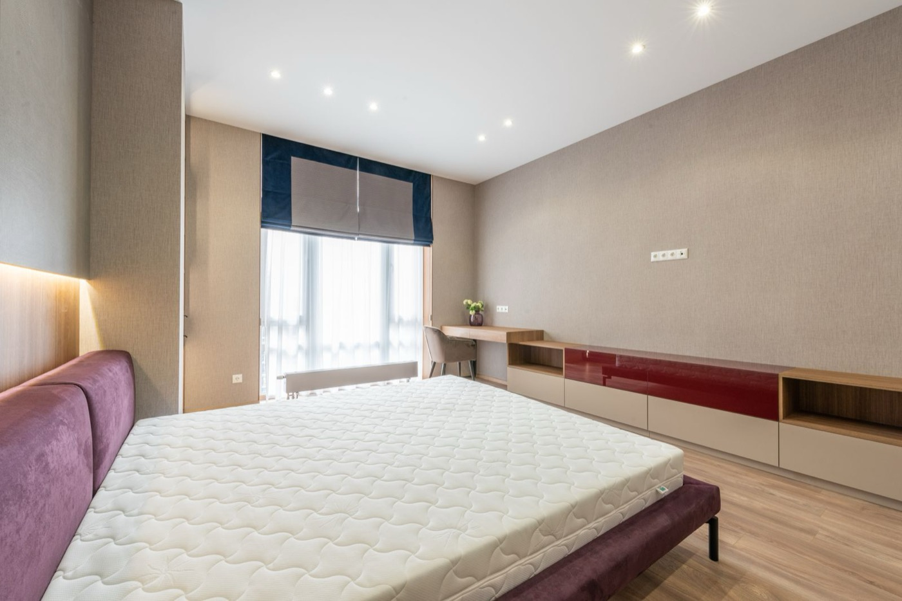

Professional Mattress Cleaning & Sanitizing
Mattresses collect dust, allergens, and everyday buildup that regular vacuuming doesn't reach. BluePeak Cleaning Co. deep cleans and sanitizes mattresses to help bedrooms feel fresher and more comfortable.

What's Included in Our Mattress Cleaning Service
Here is exactly what happens when BluePeak Cleaning Co. handles your mattress cleaning & sanitizing.
- ✓ Surface inspection for stains, odor, and buildup
- ✓ Deep vacuuming to lift dust and allergen buildup
- ✓ Sanitizing treatment across the full mattress surface
- ✓ Targeted stain and odor treatment where needed
- ✓ Allergen and dust-mite reduction pass
- ✓ Fast-dry process so the mattress is ready to use quickly
The BluePeak Difference
What sets our mattress cleaning & sanitizing service apart.
Allergen-Focused Process
Our sanitizing step is built to reduce dust mites and allergen buildup, not just clean the surface.
Safe for Daily Use
Treatments are chosen to be effective on stains and odor while remaining safe for the bedroom they're used in.
Fast, Low-Moisture Drying
We use a process designed to dry quickly so your mattress isn't out of use overnight.
Explore Our Other Services
BluePeak Cleaning Co. also offers the following services.
Ready for a deeper clean for your mattress?
Call BluePeak Cleaning Co. today for a free estimate.